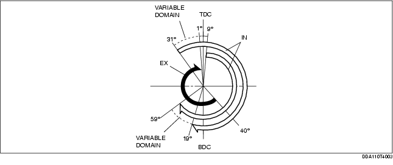
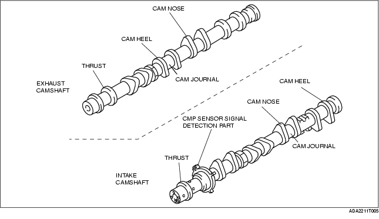

CAMSHAFT CONSTRUCTION [ZY]
id0110001013c0
• A cast iron, highly rigid 5-axis hole camshaft has been adopted to insure higher reliability.
• Camshaft endplay is regulated at the rear of the No.1 journal.
• Lubricating oil is supplied from inside of the camshaft to each journal. Additionally the cam nose part is chill cast to improve wear resistance, and the width of the cam hill part is shortened to reduce weight.
• Friction reduction and abrasion resistance have been improved on the camshaft lobe surface by improvement in the precision of fineness finishing.
• There is an oil line supplying oil to the variable valve timing actuator located on the intake port side camshaft (front of camshaft).
• Camshaft specifications differ according to the engine type.
Camshaft specification
|
ITEM
|
ZY
|
|
IN
|
EX
|
|
Lift
|
(mm {in})
|
8.0 {0.31}
|
7.2 {0.28}
|

• The intake side camshaft has a detection unit on the camshaft position (CMP) sensor integrated with the camshaft.
